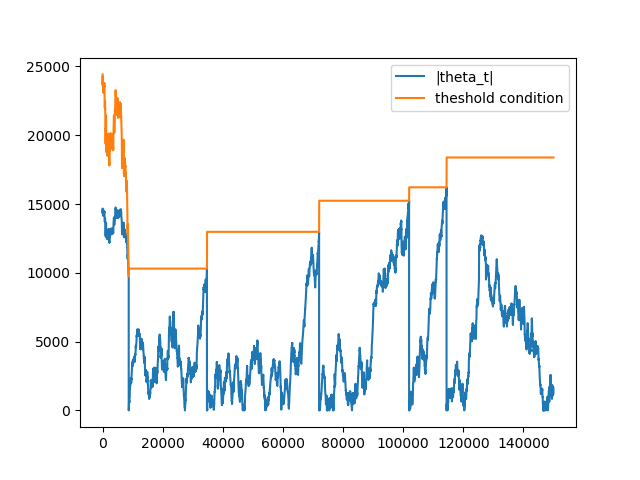
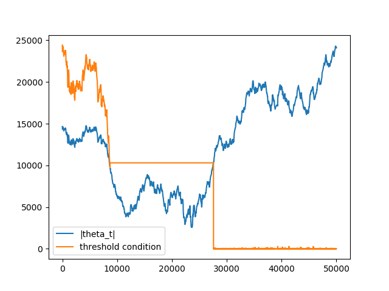

Data Structures¶
When analyzing financial data, unstructured datasets are commonly transformed into a structured format referred to as bars, where a bar represents a row in a table. mlfinlab implements tick, volume, and dollar bars using traditional standard bar methods as well as the less common information driven bars.
Data Preparation¶
Read in our data:
# Required Imports
import numpy as np
import pandas as pd
data = pd.read_csv('FILE_PATH')
Data Formatting¶
In order to utilize the bar sampling methods presented below, our data must first be formatted properly. Many data vendors will let you choose the format of your raw tick data files. We want to only focus on the following 3 columns: date_time, price, volume. The reason for this is to minimise the size of the csv files and the amount of time when reading in the files.
Our data is sourced from TickData LLC which provide TickWrite 7, to aid in the formatting of saved files. This allows us to save csv files in the format date_time, price, volume.
For this tutorial we will assume that you need to first do some preprocessing and then save your data to a csv file:
# Format the Data
# Don't convert to datetime here, it will take forever to convert
date_time = data['Date'] + ' ' + data['Time']
new_data = pd.concat([date_time, data['Price'], data['Volume']], axis=1)
new_data.columns = ['date', 'price', 'volume']
Initially, your instinct may be to pass mlfinlab package an in-memory DataFrame object but the truth is when you’re running the function in production, your raw tick data csv files will be way too large to hold in memory. We used the subset 2011 to 2019 and it was more than 25 gigs. It is for this reason that the mlfinlab package requires a file path to read the raw data files from disk:
# Save to csv
new_data.to_csv('FILE_PATH', index=False)
Standard Bars¶
The three standard bar methods implemented share a similiar underlying idea in that we want to sample a bar after a certain threshold is reached.
For tick bars, we sample a bar after a certain number of ticks.
For volume bars, we sample a bar after a certain volume amount is traded.
For dollar bars, we sample a bar after a certain dollar amount is traded.
These bars are used throughout the text book (Advances in Financial Machine Learning, By Marcos Lopez de Prado, 2018, pg 25) to build the more interesting features for predicting financial time series data.
Tick Bars¶
-
get_tick_bars(file_path, threshold=2800, batch_size=20000000, verbose=True, to_csv=False, output_path=None)¶ - Parameters
file_path – File path pointing to csv data.
threshold – A cumulative value above this threshold triggers a sample to be taken.
batch_size – The number of rows per batch. Less RAM = smaller batch size.
verbose – Print out batch numbers (True or False)
to_csv – Save bars to csv after every batch run (True or False)
output_path – Path to csv file, if to_csv is True
- Returns
Dataframe of tick bars
Creates the tick bars: date_time, open, high, low, close.
The get_tick_bars function can be implemented as follows:
from mlfinlab.data_structures import standard_data_structures
# Tick Bars
tick = standard_data_structures.get_tick_bars('FILE_PATH', threshold=5500,
batch_size=1000000, verbose=False)
Volume Bars¶
-
get_volume_bars(file_path, threshold=28224, batch_size=20000000, verbose=True, to_csv=False, output_path=None)¶ - Parameters
file_path – File path pointing to csv data.
threshold – A cumulative value above this threshold triggers a sample to be taken.
batch_size – The number of rows per batch. Less RAM = smaller batch size.
verbose – Print out batch numbers (True or False)
to_csv – Save bars to csv after every batch run (True or False)
output_path – Path to csv file, if to_csv is True
- Returns
Dataframe of volume bars
Creates the volume bars: date_time, open, high, low, close.
The get_volume_bars function can be implemented as follows:
from mlfinlab.data_structures import standard_data_structures
# Volume Bars
volume = standard_data_structures.get_volume_bars('FILE_PATH', threshold=28000,
batch_size=1000000, verbose=False)
Dollar Bars¶
-
get_dollar_bars(file_path, threshold=70000000, batch_size=20000000, verbose=True, to_csv=False, output_path=None)¶ - Parameters
file_path – File path pointing to csv data.
threshold – A cumulative value above this threshold triggers a sample to be taken.
batch_size – The number of rows per batch. Less RAM = smaller batch size.
verbose – Print out batch numbers (True or False)
to_csv – Save bars to csv after every batch run (True or False)
output_path – Path to csv file, if to_csv is True
- Returns
Dataframe of dollar bars
Creates the dollar bars: date_time, open, high, low, close.
The get_dollar_bars function can be implemented as follows:
from mlfinlab.data_structures import standard_data_structures
# Dollar Bars
dollar = standard_data_structures.get_dollar_bars('FILE_PATH', threshold=70000000,
batch_size=1000000, verbose=True)
{kind=link}
Information-Driven Bars¶
Information-driven bars are based on the notion of sampling a bar when new information arrives to the market. The two types of information-driven bars implemented are imbalance bars and run bars. For each type, tick, volume, and dollar bars are included.
Imbalance Bars¶
Imbalance Bars Generation Algorithm¶
Let’s discuss imbalance bars generation on example of volume imbalance bars. As it is described in Advances in Financial Machine Learning book:
First let’s define what is the tick rule:
\(b_t = \begin{cases} b_{t-1},\;\;\;\;\;\;\;\;\;\; \Delta p_t \mbox{=0} \\ |\Delta p_t| / \Delta p_{t},\;\;\; \Delta p_t \neq\mbox{0} \end{cases}\)
For any given \(t\), where \(p_t\) is the price associated with \(t\) and \(v_t\) is volume, the tick rule \(b_t\) is defined as:
Tick rule is used as a proxy of trade direction, however, some data providers already provide customers with tick direction, in this case we don’t need to calculate tick rule, just use the provided tick direction instead.
Cumulative volume imbalance from \(1\) to \(T\) is defined as:
\(\theta_t = \sum_{t=1}^T b_t*v_t\)
\(T\) is the time when the bar is sampled.
Next we need to define \(E_0[T]\) as expected number of ticks, the book suggests to use EWMA of expected number of ticks from previously generated bars. Let’s introduce the first hyperparameter for imbalance bars generation: num_prev_bars which corresponds to window used for EWMA calculation.
Here we face the problem of first bar generation, because we don’t know expected number of ticks with no bars generated. To solve this we introduce the second hyperparameter: expected_num_ticks_init which corresponds to initial guess for expected number of ticks before the first imbalance bar is generated.
Bar is sampled when:
\(|\theta_t| \geq E_0[T]*[2v^+ - E_0[v_t]]\)
To estimate (expected imbalance) we simply calculate EWMA of volume imbalance from previous bars, that is why we need to store volume imbalances in imbalance array, the window for estimation is either expected_num_ticks_init before the first bar is sampled, or expected number of ticks(\(E_0[T]\)) * num_prev_bars when the first bar is generated.
Note that when we have at least one imbalance bar generated we update \(2v^+ - E_0[v_t]\) only when the next bar is sampled not on every trade observed
Algorithm Logic¶
Now we have understood the logic of imbalance bar generation, let’s understand how the process looks in details:
num_prev_bars = 3
expected_num_ticks_init = 100000
expected_num_ticks = expected_num_ticks_init
cum_theta = 0
num_ticks = 0
imbalance_array = []
imbalance_bars = []
bar_length_array = []
for row in data.rows:
#track high,low,close, volume info
num_ticks += 1
tick_rule = get_tick_rule(price, prev_price)
volume_imbalance = tick_rule * row['volume']
imbalance_array.append(volume_imbalance)
cum_theta += volume_imbalance
if len(imbalance_bars) == 0 and len(imbalance_array) >= expected_num_ticks_init:
expected_imbalance = ewma(imbalance_array, window=expected_num_ticks_init)
if abs(cum_theta) >= expected_num_ticks * abs(expected_imbalance):
bar = form_bar(open, high, low, close, volume)
imbalance_bars.append(bar)
bar_length_array.append(num_ticks)
cum_theta, num_ticks = 0, 0
expected_num_ticks = ewma(bar_lenght_array, window=num_prev_bars)
expected_imbalance = ewma(imbalance_array, window = num_prev_bars * expected_num_ticks)
Note that in algorithm pseudo-code we reset \(\theta_t\) when bar is formed, in our case the formula for \(\theta_t\) is:
\(\theta_t = \sum_{t=t^*}^T b_t*v_t\)
Let’s look at dynamics of \(|\theta_t|\) and \(E_0[T] * |2v^+ - E_0[v_t]|\) to understand why we decided to reset \(\theta_t\) when bar is formed. The dynamics when theta value is reset:
{kind=link}
Note that on the first ticks, threshold condition is not stable. Remember, before the first bar is generated, expected imbalance is calculated on every tick with window = expected_num_ticks_init, that is why it changes with every tick. After the first bar was generated both expected number of ticks (\(E_0[T]\)) and exptected volume imbalance (\(2v^+ - E_0[v_t]\)) are updated only when the next bar is generated
When theta is not reset:
{kind=link}
The reason for that is due to the fact that theta is accumulated when several bars are generated theta value is not reset \(\Rightarrow\) condition is met on small number of ticks \(\Rightarrow\) length of the next bar converges to 1 \(\Rightarrow\) bar is sampled on the next consecutive tick.
The logic described above is implemented in mlfinlab package in ImbalanceBars
Examples¶
Examples of implementations of imbalance bars can be seen below:
-
get_tick_imbalance_bars(file_path, num_prev_bars, exp_num_ticks_init=100000, batch_size=2e7, verbose=True, to_csv=False, output_path=None)¶ - Parameters
file_path – File path pointing to csv data.
num_prev_bars – Number of previous bars used for EWMA window expected # of ticks
exp_num_ticks_init – initial expected number of ticks per bar
batch_size – The number of rows per batch. Less RAM = smaller batch size.
verbose – Print out batch numbers (True or False)
to_csv – Save bars to csv after every batch run (True or False)
output_path – Path to csv file, if to_csv is True
- Returns
DataFrame of tick bars
Creates the tick imbalance bars: date_time, open, high, low, close.
The get_tick_imbalance_bars function can be implemented as follows:
from mlfinlab.data_structures import imbalance_data_structures
# Tick Imbalance Bars
tick_imbalance = imbalance_data_structures.get_tick_imbalance_bars('FILE_PATH',
num_prev_bars=3, exp_num_ticks_init=100000)
-
get_volume_imbalance_bars(file_path, num_prev_bars, exp_num_ticks_init=100000, batch_size=2e7, verbose=True, to_csv=False, output_path=None)¶ - Parameters
file_path – File path pointing to csv data.
num_prev_bars – Number of previous bars used for EWMA window expected # of ticks
exp_num_ticks_init – initial expected number of ticks per bar
batch_size – The number of rows per batch. Less RAM = smaller batch size.
verbose – Print out batch numbers (True or False)
to_csv – Save bars to csv after every batch run (True or False)
output_path – Path to csv file, if to_csv is True
- Returns
DataFrame of volume bars
Creates the volume imbalance bars: date_time, open, high, low, close.
The get_volume_imbalance_bars function can be implemented as follows:
from mlfinlab.data_structures import imbalance_data_structures
# Volume Imbalance Bars
volume_imbalance = imbalance_data_structures.get_volume_imbalance_bars('FILE_PATH',
num_prev_bars=3, exp_num_ticks_init=100000)
-
get_dollar_imbalance_bars(file_path, num_prev_bars, exp_num_ticks_init=100000, batch_size=2e7, verbose=True, to_csv=False, output_path=None)¶ - Parameters
file_path – File path pointing to csv data.
num_prev_bars – Number of previous bars used for EWMA window expected # of ticks
exp_num_ticks_init – initial expected number of ticks per bar
batch_size – The number of rows per batch. Less RAM = smaller batch size.
verbose – Print out batch numbers (True or False)
to_csv – Save bars to csv after every batch run (True or False)
output_path – Path to csv file, if to_csv is True
- Returns
DataFrame of dollar bars
Creates the dollar imbalance bars: date_time, open, high, low, close.
The get_dollar_imbalance_bars function can be implemented as follows:
from mlfinlab.data_structures import imbalance_data_structures
# Dollar Imbalance Bars
dollar = imbalance_data_structures.get_dollar_bars('FILE_PATH',
num_prev_bars=3, exp_num_ticks_init=100000)
Run Bars¶
Run bars share the same mathematical structure as imblance bars, however, instead of looking at each individual trade, we are looking at sequences of trades in the same direction. The idea is that we are trying to detect order flow imbalance caused by actions such as large traders sweeping the order book or iceberg orders.
Examples of implementations of run bars can be seen below:
-
get_tick_run_bars(file_path, num_prev_bars, exp_num_ticks_init=100000, batch_size=2e7, verbose=True, to_csv=False, output_path=None)¶ - Parameters
file_path – File path pointing to csv data.
num_prev_bars – Number of previous bars used for EWMA window expected # of ticks
exp_num_ticks_init – initial expected number of ticks per bar
batch_size – The number of rows per batch. Less RAM = smaller batch size.
verbose – Print out batch numbers (True or False)
to_csv – Save bars to csv after every batch run (True or False)
output_path – Path to csv file, if to_csv is True
- Returns
DataFrame of tick bars
Creates the tick run bars: date_time, open, high, low, close.
The get_tick_run_bars function can be implemented as follows:
from mlfinlab.data_structures import run_data_structures
# Tick Run Bars
tick_run = run_data_structures.get_tick_run_bars('FILE_PATH',
num_prev_bars=3, exp_num_ticks_init=100000)
-
get_volume_run_bars(file_path, num_prev_bars, exp_num_ticks_init=100000, batch_size=2e7, verbose=True, to_csv=False, output_path=None)¶ - Parameters
file_path – File path pointing to csv data.
num_prev_bars – Number of previous bars used for EWMA window expected # of ticks
exp_num_ticks_init – initial expected number of ticks per bar
batch_size – The number of rows per batch. Less RAM = smaller batch size.
verbose – Print out batch numbers (True or False)
to_csv – Save bars to csv after every batch run (True or False)
output_path – Path to csv file, if to_csv is True
- Returns
DataFrame of volume bars
Creates the volume run bars: date_time, open, high, low, close.
The get_volume_run_bars function can be implemented as follows:
from mlfinlab.data_structures import run_data_structures
# Volume Run Bars
volume_run = run_data_structures.get_volume_run_bars('FILE_PATH',
num_prev_bars=3, exp_num_ticks_init=100000)
-
get_dollar_run_bars(file_path, num_prev_bars, exp_num_ticks_init=100000, batch_size=2e7, verbose=True, to_csv=False, output_path=None)¶ - Parameters
file_path – File path pointing to csv data.
num_prev_bars – Number of previous bars used for EWMA window expected # of ticks
exp_num_ticks_init – initial expected number of ticks per bar
batch_size – The number of rows per batch. Less RAM = smaller batch size.
verbose – Print out batch numbers (True or False)
to_csv – Save bars to csv after every batch run (True or False)
output_path – Path to csv file, if to_csv is True
- Returns
DataFrame of dollar bars
Creates the dollar run bars: date_time, open, high, low, close.
The get_dollar_run_bars function can be implemented as follows:
from mlfinlab.data_structures import run_data_structures
# Dollar Run Bars
dollar_run = run_data_structures.get_dollar_run_bars('FILE_PATH',
num_prev_bars=3, exp_num_ticks_init=100000)